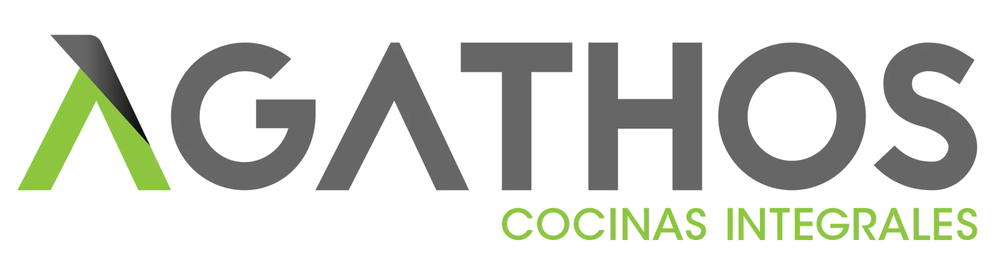
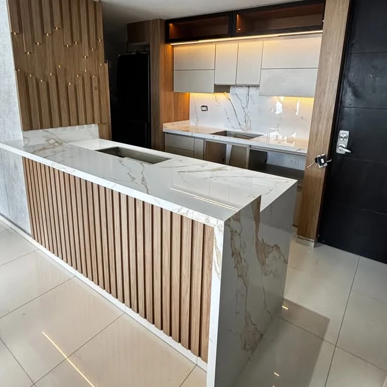
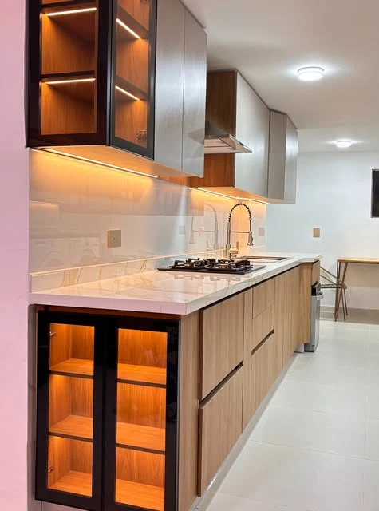

Tu idea.
Conocer tus necesidades, referencias y el momento del proyecto.



Luz, materiales y una distribución pensada para lo cotidiano.
De una primera idea a un espacio que se siente tuyo. Cocinas y mobiliario a medida en Bucaramanga.
Una cocina puede reunir, organizar y abrir nuevas posibilidades. Empecemos por lo que necesitas de ella.
Cómo cocinas. Cuánto guardas. Qué quieres cambiar. La valoración permite conocer el lugar y conversar sobre las decisiones que harán parte del diseño.
Encuentra tu punto de partidaFotografía de una publicación del perfil oficial de Agathos.
Una selección de cocinas publicadas por Agathos. Abre las imágenes para mirar sus detalles.
Imágenes de publicaciones del Instagram oficial de Agathos. Cada proyecto requiere una valoración y un alcance propios.
Si estás por recibir tu apartamento, podemos empezar por la distribución y los ambientes que quieres amoblar.
La visita se coordina con el equipo según cobertura y disponibilidad.
Conocer tus necesidades, referencias y el momento del proyecto.
Revisar condiciones y medidas para preparar una propuesta.
Revisar distribución, materiales, alcance y cotización contigo.
Coordinar fabricación e instalación según el proyecto aprobado.
Prepara tu solicitud de valoración y compártela con Agathos por WhatsApp cuando estés listo.
Calle 105 #26A-60, local 17 · Torre Picasso, Bucaramanga
El tipo de proyecto, el municipio y el estado del inmueble. También puedes compartir referencias y explicar qué quisieras mejorar en el uso del espacio.
Agathos presenta cocinas integrales y mobiliario arquitectónico a medida. Consulta con el equipo los ambientes y el alcance de tu proyecto.
Puedes indicar una fecha deseada en tu mensaje. El equipo confirmará disponibilidad, cobertura y condiciones antes de programar la visita.